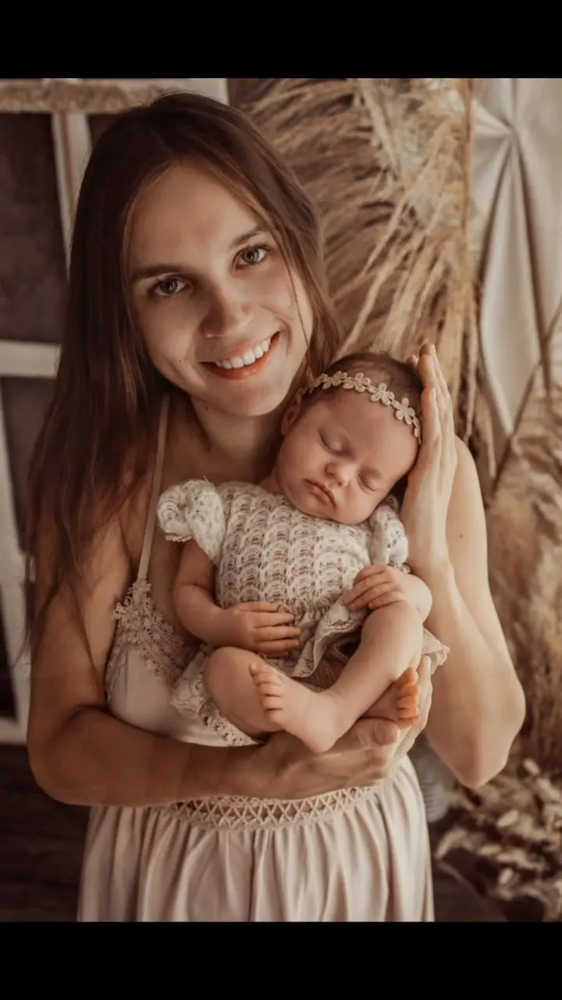
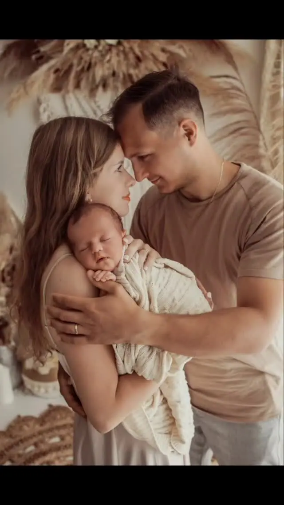

Newborn focení
Miminko fotím v ateliéru do 14 dní věku, v klidu a bez spěchu. Bezpečné polohování mám z dvou specializovaných kurzů. Pro starší miminka od 2 do 6 měsíců nabízím lifestyle newborn focení.

Jmenuji se Monika Kirchnerová a v Českých Budějovicích fotím novorozence, budoucí maminky i celé rodiny. Nejvíc mi k srdci přirostlo newborn focení, při kterém má mimink…
Rezervovat termínAhoj, jsem Monča a pocházím z Písku. Fotit mě bavilo už jako malou holku a babička mi vždycky říkala, že mám cit pro detail. Naplno jsem se focení začala věnovat až po narození svého synka. Díky němu jsem si nejvíc oblíbila novorozenecké, těhotenské a rodinné focení.

Fotím od roku 2022, kdy mě chytlo za srdce newborn focení. Abych vám mohla zaručit bezpečí, absolvovala jsem dva specializované kurzy novorozeneckého focení a dál se vzdělávám ve fotografování i úpravách. Certifikáty visí na zdech mého ateliéru, který jsem si v Českých Budějovicích otevřela v roce 2024.
Focení je moje druhá práce, přes den koordinuji dokumentaci pro výstavbu optických sítí. Ráda tvořím, a tak si některé rekvizity do ateliéru vyrábím sama. Záleží mi na tom, abyste si focení užili v klidu a bez stresu z pózování a abyste ze mě odcházeli s úsměvem.
Co fotím
Miminko fotím v ateliéru do 14 dní věku, v klidu a bez spěchu. Bezpečné polohování mám z dvou specializovaných kurzů. Pro starší miminka od 2 do 6 měsíců nabízím lifestyle newborn focení.
Focení v ateliéru nebo venku, těhotenské šaty a rekvizity vám ráda zapůjčím. Když se pak vrátíte i s miminkem, máte slevu na newborn focení.
Fotíme v ateliéru, v přírodě nebo u vás doma. Pomůžu s výběrem oblečení a pro děti mám spoustu hraček, takže odcházejí s odměnou a nechce se jim domů.
Ve vánočním ateliéru připravuji dvě scény i s rekvizitami a oblečením. Fotím také narozeninové focení, třeba na první narozky.
Postup
Zavolejte mi, napište nebo si termín rezervujte přímo na webu. Společně vybereme balíček, který vám bude sedět.
Pošlu vám vše praktické: jak se připravit, co na sebe a jak připravit děti. Před newborn focením posílám krátký dotazník a po porodu si spolu jen potvrdíme termín.
Fotíme v mém ateliéru, u vás doma nebo venku. Rekvizity i oblečení vám zapůjčím a jemně vás povedu, vy si jen užíváte chvíli.
Náhledovou galerii vám pošlu zhruba do 3 dnů a vy si z ní vyberete fotky. Upravené je dostanete barevně i černobíle a rok je u sebe zálohuji.
Otázky
Klasické newborn focení dělám do 14 dní věku miminka, kdy je nejvíc ospalé a dá se krásně polohovat. Pro miminka ve věku 2 až 6 měsíců nabízím lifestyle newborn focení.
Samotné focení, zapůjčení rekvizit i oblečení, úpravy fotek podle balíčku, online galerie pro výběr, privátní galerie s hotovými fotkami a záloha na 1 rok. Doplácíte jen fotky nad rámec balíčku.
Na Lidické třídě 577/96 v Českých Budějovicích, vstup je přes cukrárnu a kavárnu Buchty ze zastávky. Parkovat můžete v ulici Šumavská u parku. Ráda ale přijedu i k vám domů.
Nemusíte. Pro miminko, sourozence i dospělé mám oblečení k zapůjčení a ráda vám se stylingem poradím předem.
Kontakt
kirchnerovafoto@gmail.com
+420 721 029 904
@fotografka_monika.kirchnerova